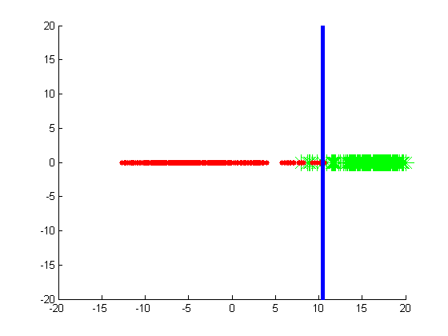
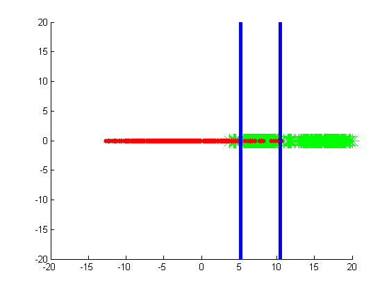
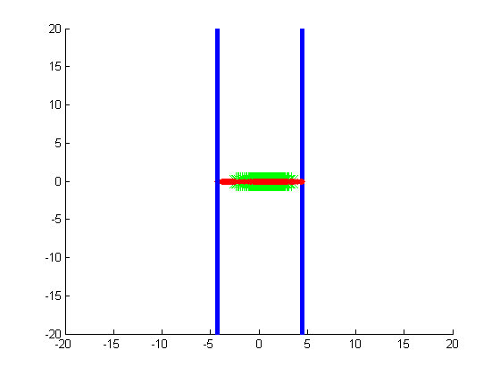
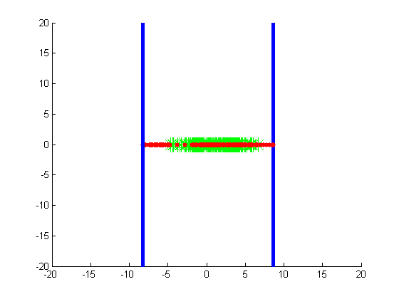
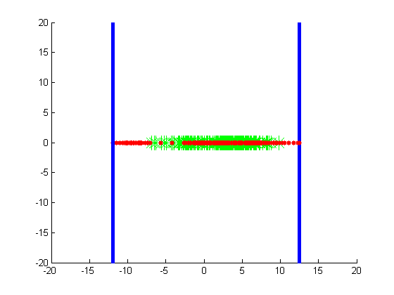
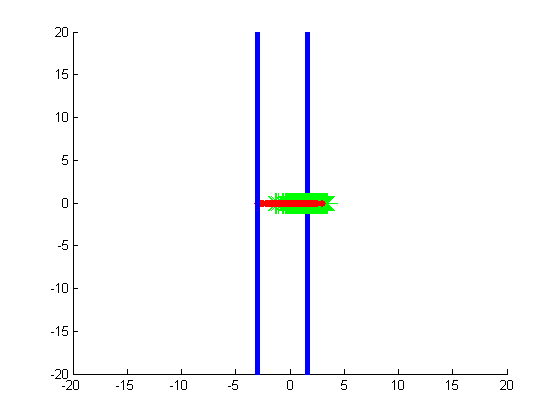
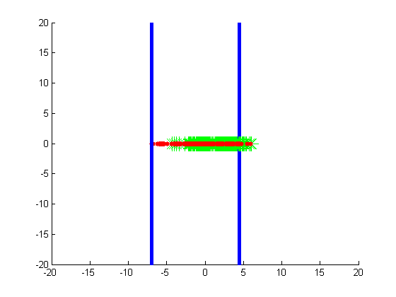
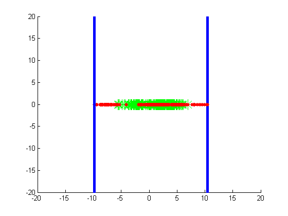
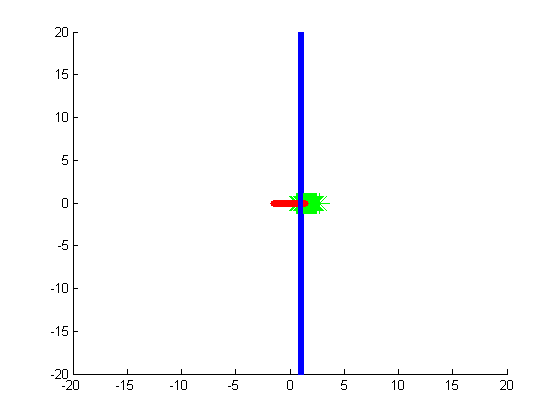
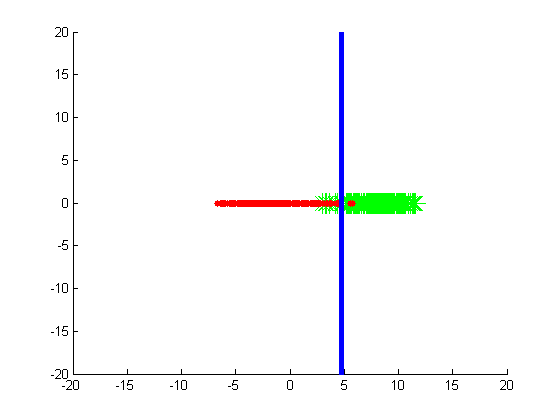

Contents
Adaboost Implementation for Viola Jones Algorithm
what has to be done is : for each interation, calculate the least error for all the features. the feature having the least error for that iteration among all the other features wins. we calculate the weight of this feature. a classifier is nothing but a convlolution with a specific feature vector.
%data_gen() should be dependent on the haar classifier used %data_gen(A) should be the actual thing to be used here.
A set of all Haar Classifiers to be used in this implementation
A=cell(10,1);
%have some haar classifiers.
A{1}=[ -1,-1,-1;
-1,-1,-1;
-1,-1,-1;
+1,+1,+1;
+1,+1,+1;
+1,+1,+1];
A{2}=[ -1,-1,-1,-1,-1,-1;
-1,-1,-1,-1,-1,-1;
-1,-1,-1,-1,-1,-1;
+1,+1,+1,+1,+1,+1;
+1,+1,+1,+1,+1,+1;
+1,+1,+1,+1,+1,+1];
A{3}= [ -1,-1,-1,-1,-1,-1,-1,-1,-1;
-1,-1,-1,-1,-1,-1,-1,-1,-1;
-1,-1,-1,-1,-1,-1,-1,-1,-1;
+1,+1,+1,+1,+1,+1,+1,+1,+1;
+1,+1,+1,+1,+1,+1,+1,+1,+1;
+1,+1,+1,+1,+1,+1,+1,+1,+1];
A{4}=[ -1,-1,+1,+1;
-1,-1,+1,+1;
-1,-1,+1,+1;
-1,-1,+1,+1;
-1,-1,+1,+1;
-1,-1,+1,+1;
-1,-1,+1,+1;
-1,-1,+1,+1];
A{5}=[ -1,-1,-1,+1,+1,+1;
-1,-1,-1,+1,+1,+1;
-1,-1,-1,+1,+1,+1;
-1,-1,-1,+1,+1,+1;
-1,-1,-1,+1,+1,+1;
-1,-1,-1,+1,+1,+1;
-1,-1,-1,+1,+1,+1;
-1,-1,-1,+1,+1,+1];
A{6}=[ -1,-1,-1,-1;
-1,-1,-1,-1;
-1,-1,-1,-1;
-1,-1,-1,-1;
+1,+1,+1,+1;
+1,+1,+1,+1;
+1,+1,+1,+1;
+1,+1,+1,+1];
A{7}=[ +1,-1,-1,+1;
+1,-1,-1,+1;
+1,-1,-1,+1;
+1,-1,-1,+1;
+1,-1,-1,+1;
+1,-1,-1,+1;
+1,-1,-1,+1;
+1,-1,-1,+1];
A{8}=[ +1,+1,-1,-1,+1,+1;
+1,+1,-1,-1,+1,+1;
+1,+1,-1,-1,+1,+1;
+1,+1,-1,-1,+1,+1;
+1,+1,-1,-1,+1,+1;
+1,+1,-1,-1,+1,+1;
+1,+1,-1,-1,+1,+1;
+1,+1,-1,-1,+1,+1];
A{9}=[ +1,+1,-1,-1,-1,+1,+1;
+1,+1,-1,-1,-1,+1,+1;
+1,+1,-1,-1,-1,+1,+1;
+1,+1,-1,-1,-1,+1,+1;
+1,+1,-1,-1,-1,+1,+1;
+1,+1,-1,-1,-1,+1,+1;
+1,+1,-1,-1,-1,+1,+1;
+1,+1,-1,-1,-1,+1,+1];
A{10}=[ +1,+1,+1,-1,-1,-1,+1,+1,+1;
+1,+1,+1,-1,-1,-1,+1,+1,+1;
+1,+1,+1,-1,-1,-1,+1,+1,+1;
+1,+1,+1,-1,-1,-1,+1,+1,+1;
+1,+1,+1,-1,-1,-1,+1,+1,+1;
+1,+1,+1,-1,-1,-1,+1,+1,+1;
+1,+1,+1,-1,-1,-1,+1,+1,+1;
+1,+1,+1,-1,-1,-1,+1,+1,+1];
Given
% we are given example images in face and non-face folder. +1 represents % the face image and -1 represents the non-face images. % see the attached training images folders in the current directory.
1st step Initialisation
%weights are initialized. l=200; %number of face images. m=400; %number of non-face images. % weights for face images = 1/(2*l) % weights for non-face images = 1/(2*m) %group the weights together. weights=[ones(l,1)./(2*l);ones(m,1)./(2*m)];
2nd step Main Adaboost Loop
for t=1:3 %%%%%%%%%%%%%%%%%%%%%%%%%%%%%%%%%%%%%%%%%%%%%%%%%%%%%%%%%%%%%%%%%%%%%%% %normalise the weights. weights=weights./(sum(weights)); %%%%%%%%%%%%%%%%%%%%%%%%%%%%%%%%%%%%%%%%%%%%%%%%%%%%%%%%%%%%%%%%%%%%%%% %%%%%%%%%%%%%%%%%%%%%%%%%%%%%%%%%%%%%%%%%%%%%%%%%%%%%%%%%%%%%%%%%%%%%%% error_list=zeros(1,length(A)); beta_list=zeros(1,length(A)); threshold=zeros(1,length(A)); polarity_list=zeros(1,length(A)); %select the best weak classifier with respect to the current weights. for i=1:length(A) [facedata,nonfacedata, ]=data_gen(A{i}); data=[facedata;nonfacedata]'; % we will plot the data. figure(i) hold on; plot(facedata(:,1),0,'*g','MarkerSize',16); plot(nonfacedata(:,1),0,'.r','MarkerSize',16); axis([-3 3 -0.5 0.5]); %perform pocket on the data obtained from the present haar feature. %[x,error, polarity]= best_classifier(data, weights); [x,error, polarity]= optimal(data, weights); beta=(error/(1-error)); hold off; error_list(i)=error; beta_list(i)=beta; threshold(i)=x; polarity_list(i)=polarity; %for a polarity value of 1, the images on the right side of threshold are faces %for a polarity value of 2, the images on the left side of threshold are %faces end %%%%%%%%%%%%%%%%%%%%%%%%%%%%%%%%%%%%%%%%%%%%%%%%%%%%%%%%%%%%%%%%%%%%%%% %%%%%%%%%%%%%%%%%%%%%%%%%%%%%%%%%%%%%%%%%%%%%%%%%%%%%%%%%%%%%%%%%%%%%%% %form/define the classifier %a classifier is a haarfeature,threshold,polarity combination [~,best_classifier_index]=min((error_list)); theta = (threshold(best_classifier_index)); feature = A{best_classifier_index}; classifier_polarity = polarity_list(best_classifier_index); classifier_beta=beta_list(best_classifier_index); alpha = log(1/classifier_beta); field1='Feature'; field2='Threshold'; field3='Polarity'; field4='Alpha'; s(t) = struct(field1,feature,field2,theta,field3,classifier_polarity,field4,alpha); %%%%%%%%%%%%%%%%%%%%%%%%%%%%%%%%%%%%%%%%%%%%%%%%%%%%%%%%%%%%%%%%%%%%%%% %%%%%%%%%%%%%%%%%%%%%%%%%%%%%%%%%%%%%%%%%%%%%%%%%%%%%%%%%%%%%%%%%%%%%%% %update the respective weights of the misclassified points. [facedata,nonfacedata, ]=data_gen(A{best_classifier_index}); data=[facedata;nonfacedata]'; if classifier_polarity==1 classifier_output=sign(data(1,:)-theta); else classifier_output=sign(theta-data(1,:)); end classifier_output(find(classifier_output==-1))=0; weights=weights.*(classifier_beta.^(classifier_output))'; %%%%%%%%%%%%%%%%%%%%%%%%%%%%%%%%%%%%%%%%%%%%%%%%%%%%%%%%%%%%%%%%%%%%%%% A(best_classifier_index)=[]; end         
3rd step. Make a strong classifier
Unimplemented now. form the strong classifier by using the alphas and the classifier from the 2nd step.